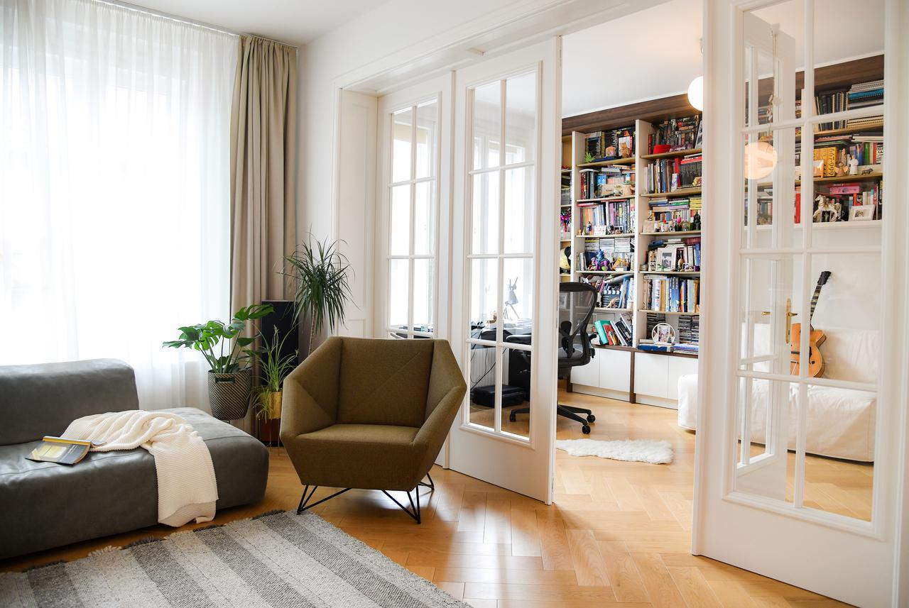

Tržište nekretnina bilježi veliki rast cijena, posebno u urbanim sredinama. Stručnjaci upozoravaju na izazove za mlade kupce.
Prosječna cijena najma stanova u Sarajevu porasla je za 15% u odnosu na prošlu godinu.
Moderne zgrade i povoljni krediti povećali su interes za kupovinu stanova u Zagrebu.
Sve više ljudi kupuje vikendice na planinama, tražeći mir i prirodu daleko od gradske buke.
Rast potražnje za luksuznim nekretninama, posebno u primorskim gradovima poput Dubrovnika i Kotora.
Projekat "Beograd na vodi" nastavlja privlačiti strane investitore.
Prijedor, Banja Luka i Mostar izdvajaju se kao najisplativiji gradovi za ulaganje.
Veliki interes za kupovinu apartmana u Dalmaciji i na Crnogorskom primorju.
Kupovina nekretnine može biti izazovna. Donosimo savjete kako donijeti ispravnu odluku.
Renoviranje starijih stanova postalo je popularno među investitorima.
Manja sela doživljavaju procvat zahvaljujući ulaganjima u infrastrukturu.
Cijene nekretnina u Crnoj Gori rastu zahvaljujući turističkoj potražnji.
Cijene nekretnina u Sarajevu rastu zahvaljujući turističkoj potražnji.